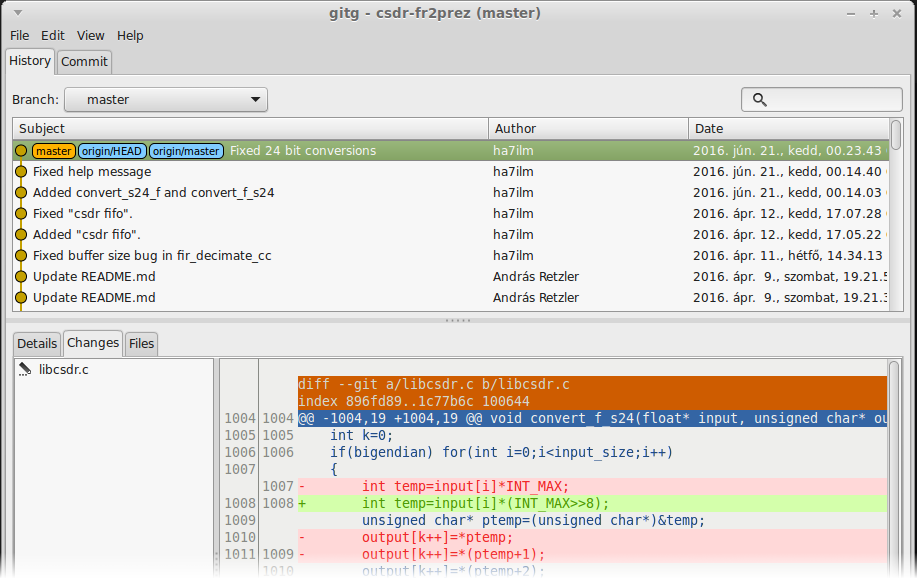

distributed version control
Linus Torvalds in 2005
What is version control?

repository
A directory under version control.

git init
Create a new git repository
git status
Show if there are any changed or new (untracked) files.
.gitignore
Tell git to ignore some files (build products, temporary files, huge binaries, etc.)
git add
Add file to the Index (staging area)
git commit
A commit is a version of the whole project.
git diff
Show differences.
Now create a new commit from the changes.
git add test.c
git commit
Let's create a third commit as well!
What if we want to go back to a previous commit?
git merge
Merge changes from a given branch to the current one.
How can we implement a central storage?
git clone
Make a (local) copy of a repository
git pull
Download changes from remote repository
git push
Upload changes to remote repository